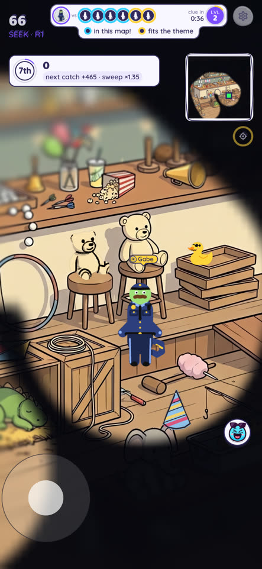
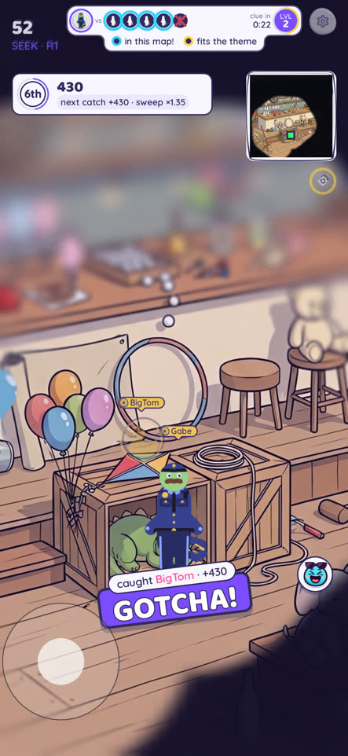
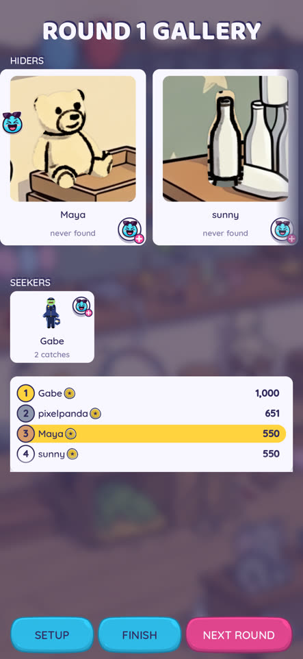

Your chat plays with you from their phones. It's free for them, with no account, and takes about a minute to set up.
How it worksOn Steam, press CREATE A ROOM. A 4-letter code and a QR code appear.
Viewers point their phone camera at the QR. With the game installed, it joins your room; without it, they get a page with your code and the download button.
Or just say the code: they tap JOIN A FRIEND and type it.
Steam includes the full game, so everyone in your room plays any map you pick, even on the free version.
A room holds you and 7 viewers. Up to 16 more can WAIT IN LINE, first come, first served. They keep the game open and get called in when a seat frees up.
To rotate viewers, play a few rounds with a group, then kick some or all of them (Settings, PLAYERS, tap the player, KICK). The next viewers come in from the line, and a kicked player can't rejoin that room, so the seats keep going to new people.
To bring earlier players back, create a new room. Its kick list starts empty, so everyone can join again with the new code.
The game waits for you between rounds: press NEXT ROUND when chat is ready. In SETUP you choose:
You have three options.
In a viewer game, the chaos is half the fun.
Cover the game while you hide, then tap WATCH to follow a seeker once seeking starts.
While you watch, every player wears a name tag, which would give the other hiders away. Turn them off: Settings, NAME TAGS, OFF.
A delay longer than the seek time hides your spot completely.
Settings, PLAYERS, tap the player, KICK. They're out and can't come back into this room.
Report an offensive drawing or name from the same sheet. It reaches us, and we can ban them from public rooms.
There's no text or voice chat in the game, and names pass a profanity filter.
Every round ends on a reveal. The camera tours each hider, then the gallery replays every paint job.



A phone with Sneaklings from Google Play or the App Store: free, with no account and no ads. PC viewers need the game on Steam.
Email support@balagangames.com, or tell us on Discord: discord.gg/DzMT9dy8B3